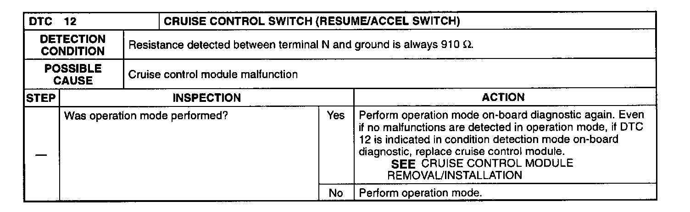

Operation CHARM
: Car repair manuals for everyone.
Home
>>
Mazda
>>
1999
>>
MX-5 Miata L4-1.8L DOHC
>>
Repair and Diagnosis
>>
Sensors and Switches
>>
Sensors and Switches - Cruise Control
>>
Cruise Control Switch
>>
Testing and Inspection
>>
Related Diagnostic Procedures
>>
In Detection Mode
>>
12 Cruise Control Switch (Resume/ACCEL Switch)
12 Cruise Control Switch (Resume/ACCEL Switch)
DTC 12 Cruise Control Switch (Resume/Accel Switch):
